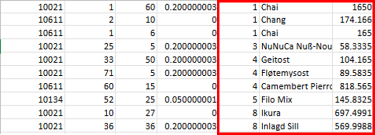
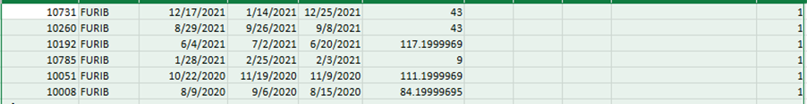
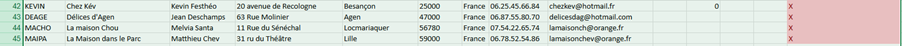

Mission 1 : Analyse et Exploration
1. Analyse de la Structure de la Base de Données
Tableau de Synthèse des Clés
| Table | Clé Primaire | Clé(s) Candidate(s) | Clés Étrangères |
|---|---|---|---|
| FOURNISSEUR | N°Fournisseur | Aucun | Aucun |
| PRODUIT | Réf produit | Aucun | Code catégorie, N° fournisseur |
| CATEGORIE | Code catégorie | Nom de catégorie | Aucun |
| CLIENTELE | Code client | MailCli | Aucun |
| COMMANDE | N° commande | Aucun | Code client |
| DETAILCOMMANDE | (N° commande, Réf produit) | Aucun | Réf produit, N° commande |
Analyse détaillée des tables
Voici l'utilité identifiée pour chaque table de la base KDou :
| Table | Rôle et Utilité pour KDou |
|---|---|
| FOURNISSEUR | Permet de gérer les informations des partenaires (Société, Contact, Adresse) pour la logistique et les réapprovisionnements. |
| CATEGORIE | Sert à classer les produits (Nom, Description, Marge) pour analyser la rentabilité par famille d'articles. |
| CLIENTELE | Centralise les données clients (Code, Contact, Livraison) pour le suivi des commandes et la communication. |
| PRODUIT | Catalogue des articles (Prix, Stock, Fournisseur) essentiel pour la gestion des stocks et des marges. |
| COMMANDE | Enregistre les transactions (Dates, Frais de port) pour le suivi chronologique des ventes et la logistique. |
| DETAILCOMMANDE | Lie les produits aux commandes (Quantité, Remise) pour la facturation précise. |
2. Navigation et Exploration des Données
a. Combien y a-t-il de clients parisiens ?
Procédé : Utilisation de la formule =NB.SI(E:E; "Paris") dans la table CLIENTELE.
Résultat : 5
Difficultés : Aucune, mais risque d'erreur si "Paris" est mal orthographié.
b. Combien y a-t-il de clients bisontins ?
Procédé : Utilisation de la formule =NB.SI(E:E; "Besancon").
Résultat : 1
Difficultés : Orthographe de la ville (Besançon vs Besancon).
c. Combien y a-t-il de clients en Île-de-France ?
Procédé : Nous avons utilisé la formule =NB.SI(F:F;"XX*") où "XX"
était remplacé par chaque numéro de département de la région (75, 77, 78, 91, 92, 93, 94, 95).
Nous avons ensuite additionné tous les résultats avec la fonction =SOMME().
Résultat : 6
Difficultés : La méthode est répétitive et peu optimisée. Ce serait plus efficace d'avoir une colonne "Région" complète ou d'utiliser des fonctions de base de données plus avancées pour éviter de répéter la commande pour chaque département (Comme le SQL par exemple).
d. Donnez l'adresse et la fonction du fournisseur Andrew Wilson ?
Procédé : Nous avons effectué une recherche (CTRL + F) dans la table FOURNISSEUR sur le nom de sa société, "Baker’s Treats, Ltd.", pour trouver les informations de son contact.
Résultat : Fonction : Représentant. Adresse : 29 King's Way, Manchester M14 FLP.
Difficultés : Un CTRL + F est trop simple et peut causer des erreurs dès lors que la requête de recherche est erronée ou bien juste que le nom de la société ou du champ entrée par le gérer de la BD ait fait une faute d’orthographe.
e. Combien y a-t-il de fournisseurs en Europe ?
Procédé : Nous avons d'abord parcouru manuellement la colonne "Pays"
pour dresser une liste des pays européens présents. Ensuite, nous avons utilisé la formule
=SI(NB.SI(liste_pays_UE;I2)>0;"Oui";"Non") pour marquer chaque fournisseur. Enfin, nous avons
compté le nombre de "Oui" avec =NB.SI(N:N;"Oui").
Résultat : 16
Difficultés : La principale difficulté est la création manuelle de la liste des pays de l'UE, ce qui est source d'erreurs potentielles et n'est pas une méthode automatisable (manuel car pays en différents langages comme les Pays-Bas).
f. Combien y a-t-il de pays hors UE ?
Procédé : Soustraction simple à partir du total des fournisseurs (36 lignes - 1 en-tête = 35) et du résultat précédent : 35 - 16.
Résultat : 19 fournisseurs sont situés hors UE.
Difficultés : La fiabilité du résultat dépend entièrement de l'exactitude de la
question précédente, on aurait pu faire, afin de ne pas dépendre de la question
précédente =NB.SI(N:N;"Oui").
g. Quelle est l'offre de produits (noms et catégories) de prix entre 100 et 250 euros ?
Procédé : Dans la table PRODUIT, nous avons utilisé =SI(ET(F2>=100;F2<=250);1;"")
pour marquer les produits concernés. Pour obtenir le nom de la catégorie, Nous avons utilisé une
seconde commande : =RECHERCHEV(C2;Categorie;2;FAUX), puis j'ai trié les résultats.
Résultat : Bratislava Vodka (Boissons), Dea Surströmming (Poissons), Côte de Blaye (Boissons), Thüringer Rostbratwurst (Viandes).
Difficultés : La nécessité de croiser des informations entre deux tables (PRODUIT et CATEGORIE) et de créer des colonnes temporaires rend le processus moins direct et plus flou (les tables se remplissent de commandes inutiles à la table).
h. Quelle est la fonction du contact du fournisseur Crème des Prés ?
Procédé : Recherche (CTRL+F) sur le nom de la société.
Résultat : Représentante.
i. Quels produits a commandés la cliente Marie Malef ?
Procédé :
- Dans la table COMMANDE, identification des commandes de Marie Lefevre avec
=SI(RECHERCHEV(B1;Clientele;1;FAUX)="MALEF";1;"")qui donne 10611, 10611 et 10611. - Dans DETAILCOMMANDE, récupération des détails avec
=SI(OU($A1=10021;$A1=10134;$A1=10611);RECHERCHEV($B1;Produit;3;FAUX);""), en adaptant le numéro de colonne pour le nom et le prix.
Résultat :
Difficultés : Le principal obstacle est une incohérence de données : "Marie Malef" n'existe pas. J'ai dû faire la supposition qu'il s'agissait de "Marie Lefevre". Le processus est complexe, nécessitant de naviguer entre trois tables et de coder en dur les numéros de commande, ce qui n'est pas une méthode fiable, une erreur d’inattention peut se glisser dans le processus.
j. Quelle est la date de la dernière commande du client Verre à soi ?
Procédé : Dans la table COMMANDE, j'ai marqué les commandes du client avec
=SI(RECHERCHEV(B1;Clientele;2;FAUX)="Verre à soi";1;""), puis j'ai effectué un tri personnalisé
sur cette colonne, et un second tri sur la date de commande par ordre décroissant.
Résultat : 17/12/2021
Difficultés : Le processus nécessite une manipulation en plusieurs étapes (formule puis tri multi-critères) au lieu d'une requête directe, une erreur encore de fatigue ou d’inattention peut se faufiler.
k. Donnez l'offre de produits en provenance des Pays-Bas ?
Procédé :
- Dans FOURNISSEUR, identification des fournisseurs avec
=SI(OU($I1="Nederland";$I1="Pays-Bas");1;"") - Dans PRODUIT, recherche des produits liés aux N° fournisseurs trouvés (22 et 35) avec
=SI(OU(RECHERCHEV(B2;Fournisseur!A:A;1;FAUX)=22;RE-CHERCHEV(B2;Fournisseur!A:A;1;FAUX)=35);1;""), .
Résultat :

Difficultés : Les différentes langues dans la saisie du nom du pays ("Pays-Bas", "Nederland") complique la requête et force l'utilisation d'une fonction OU. La méthode est indirecte et repose sur des identifiants (22, 35) qu'il a fallu récupérer manuellement.
l. Quelles sont les catégories de produit vendues par les fournisseurs espagnols ?
Procédé : Un processus similaire à la question précédente a été utilisé : d'abord identifier les fournisseurs espagnols, puis retrouver les catégories de leurs produits.
Résultat : les catégories de produits en provenance de l'esspagne sont seulement les "Pâtes et céréales".
m. Est-ce qu'il y a des clients qui n'ont pas passé de commande ?
Procédé : Dans la table CLIENTELE, j'ai utilisé la formule =SI(NB.SI(Commande!B:B;A1)>0;"O";"X") pour vérifier si chaque Code client existe dans la table des commandes.
Résultat : Oui, plusieurs clients (marqués par un X dans notre analyse).
Difficultés : Aucune car cette fois ci la méthode est efficace pour ce type de vérification sur Excel.
3. Évaluation de la qualité des données
L'analyse a révélé plusieurs problèmes critiques :
- Incohérences : Fautes de frappe (ex: "Lillle", "Besancon") créant des doublons.
- Données manquantes : Champs vides (Région) ou invalides (Téléphone).
- Structure : Absence de suivi client (réclamations) et de statut de commande clair (attente/livrée).
4. Propositions d'amélioration
Pour corriger ces défauts et moderniser la base KDou, nous proposons :
- Standardisation : Créer une table Ville pour éviter les erreurs de saisie.
- Suivi Client : Ajouter une table SuiviClient (interaction, réclamation, employé concerné).
- Suivi Commande : Ajouter un champ Statut.
-
Dimension Écologique :
- Ajout d'un Score Écologique (A à E) dans la table PRODUIT.
- Indicateur Origine Locale et certification Bio pour les fournisseurs.